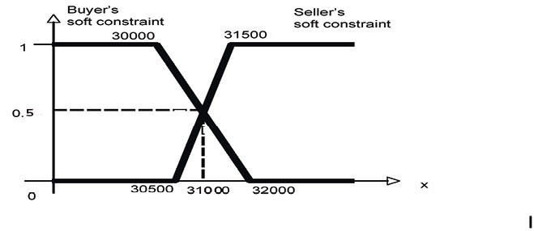

MatchMaking Example 1:
Assume, that a car seller sells an Audi TT for $31500, as from the catalog price. A buyer is looking for a sports-car, but wants to pay not more than around $30000. In classical DLs no agreement can be found, as $31500 > $30000. The problem relies on the crisp condition on the seller's and the buyer's price. A more fine grained approach would be (and usually happens in matchmaking) to consider prices as concrete fuzzy sets instead. For instance, the seller may consider optimal to sell above $31500, but can go down to $30500. On the other hand, the buyer prefers to spend less than $30000, but can go up to $32000.
We may represent these statements by means of the following axioms:
(define-fuzzy-concept AudiTTPrice right-shoulder(0,50000,30500,31500))
(define-concept AudiTT (and SportsCar (some hasPrice AudiTTPrice)))
Of course the "hasPrice" role is functional:
(functional hasPrice)
The buyer's query can be defined as:
(define-fuzzy-concept BuyerPrice left-shoulder(0,50000,30000,32000))
(define-concept BuyerQuery (and SportsCar (some hasPrice BuyerPrice)))
In order to find the best agreement among the seller and the buyer, we compute the maximal degree of satisfiability of the concept (and BuyerQuery AudiTT). Therefore, we ask to the system to compute the maximal possibility that buyer's requst and the seller's conditions are matching:
(max-sat? (and BuyerQuery AudiTT))
(show-fillers? hasPrice)
The returned value is 0.5 and corresponds to the point where both requests intersects, i.e., the car may be sold at $31000.

The example file can be found here.